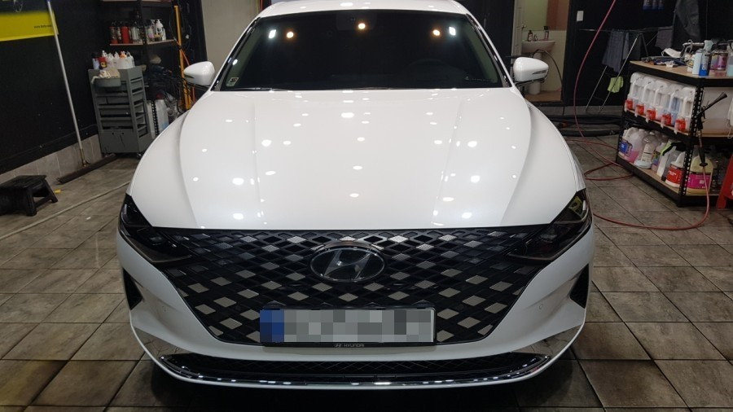

SEOUL, July 19 (Yonhap) -- Hyundai Motor Co.'s new Grandeur sedan is likely to see its sales top 100,000 units this month, eight months after its launch in the domestic market, industry sources said Sunday. Hyundai Motor launched the face-lifted Grandeur in November last year and aimed to sell 110,000 units in the domestic market this year.
